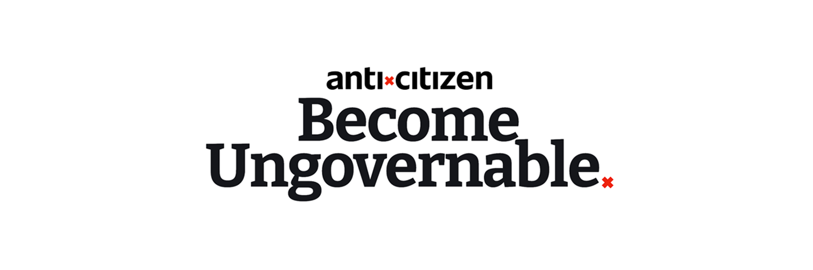
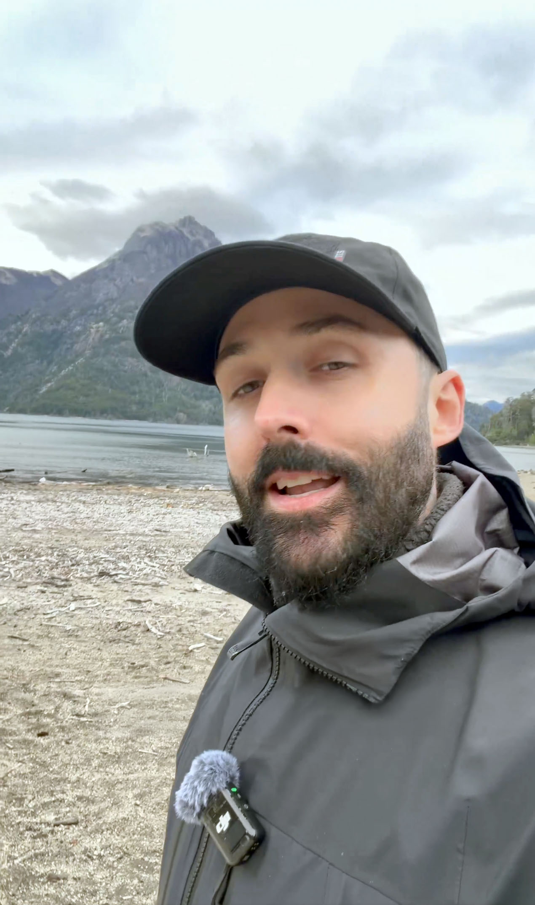

I've known Leon for fifteen years. We met through Bam Margera, and then we worked at festivals together all over the world. Now he runs Anticitizen, a membership platform that helps people get second passports, offshore banking, and legal tax structures. Tagline: "Become Ungovernable."
Leon figured out how to hack the algorithm with talking heads. He's been doing it successfully for a while. He contacted me to turn each winning video into hundreds of variations.
Anticitizen runs on content volume. When Leon finds a talking head that hits, the play is to squeeze every possible version out of that video before the format goes cold. The question was never "does the formula work." The question was how to multiply a single recording session into enough content to feed multiple channels for weeks.
A talking head that works is worth more than one upload. Every time you post the same video, the algorithm has already seen it. But if you can change the structure, the hook, the soundtrack, and the graphics, each variation registers as new content. The challenge: build a production system that turns one script into hundreds of unique variations without Leon recording every single one from scratch.
The ApproachWe recorded ten versions of every talking head. Same core message, different delivery every time. Then we cut each version into interchangeable segments: 10 intros, 10 bodies, 10 call-to-actions.
10 × 10 × 10. One thousand possible structural combinations from a single script.
Now layer on 35 different title hooks on screen. 10 different audio tracks. Different graphic treatments. We landed on 525 variations per viral video. From one recording session.
Ten versions per talking head. Same script, different delivery every time. Each version recorded with the intent to be chopped into segments that mix and match with segments from every other version. The whole system falls apart if the segments don't cut together cleanly, so every take had to work as a standalone and as a building block.
Every take got cut into three interchangeable segments: intro, body, CTA. Thirty raw clips per talking head. The intro from version two works with the body from version six and the CTA from version nine. Swap the on-screen title hook, change the audio track, switch the graphic treatment. 525 unique videos. Each one structured differently enough that every platform treats it as original content.
On top of the talking heads, we generated 400 UGC-style carousels across eight narrative categories. Each batch of 50 had its own angle. CTA distribution: 40% soft, 40% medium, 20% hard. All formatted to plug straight into paid ad campaigns.
525 variations per video plus 400 carousels is an overdose of content. None of it goes on Leon's main brand account. We warmed up close to fifty new TikTok accounts in the Anticitizen niche and started posting five to ten times a day per account. The compositions are different enough to not trigger TikTok's duplicate detection, and because the content is strong, brand new accounts pull hundreds of thousands of views right out of the gate. I did the consultancy to map this whole channel infrastructure and make sure the volume had somewhere to go.
525 unique video variations per talking head. 400 ad carousels across eight categories. Close to fifty TikTok accounts warmed up in the Anticitizen niche, posting five to ten times a day. Brand new accounts hitting hundreds of thousands of views. Organic CPM between $0.14 and $0.20.
A production system that turns one recording session into weeks of content across the entire channel infrastructure.